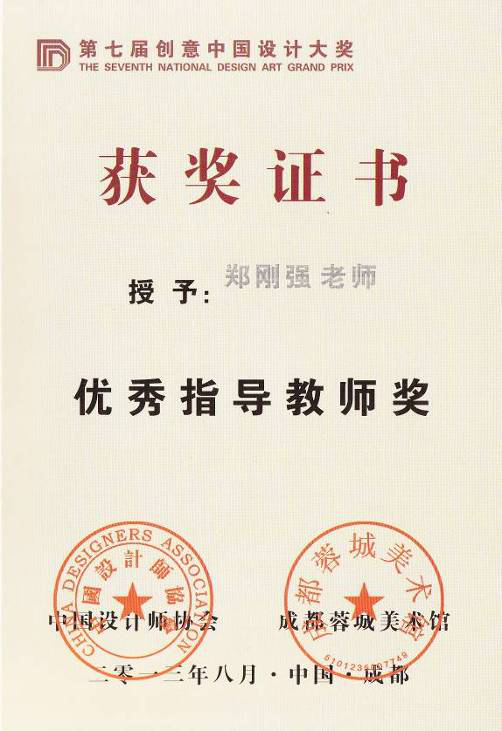
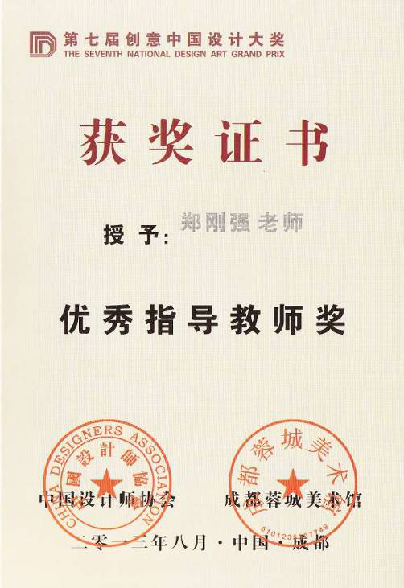
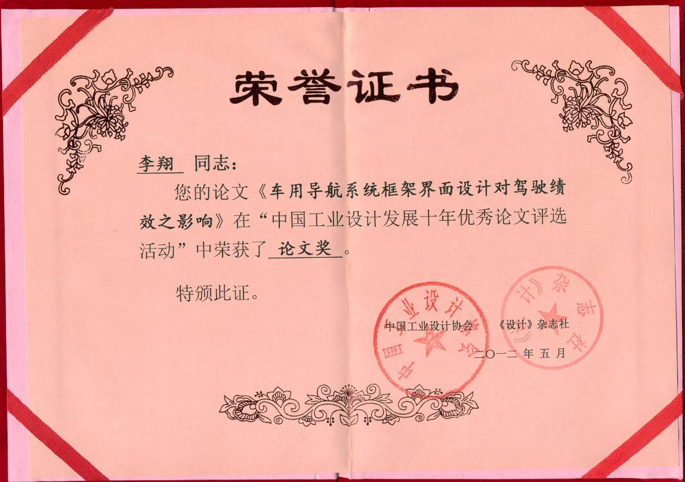
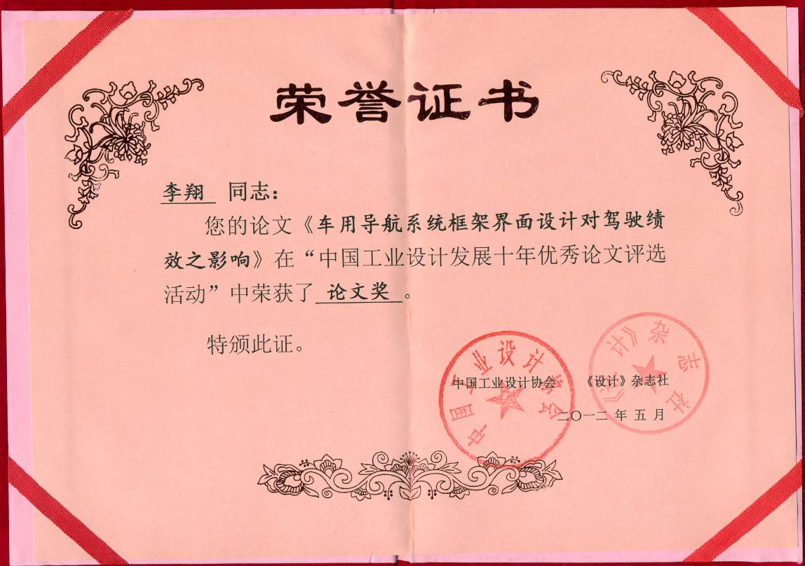

教学研究获奖
发布时间：2018-04-26 13:47:44 浏览次数：
序号 | 作者 | 获奖成果名称 | 获奖等级 | 颁奖部门 | 获奖时间 |
1 | 方兴 | 《工业设计“双师型”人才培养公共平台建设与实践》获武汉理工大学教学成果特等奖（排名2） | 校级 | 武汉理工大学 | 2012 |
2 | 汤军 | 工业设计专业的适合性课程研究，获得“中国工业设计发展十年优秀工业设计论文评选活动”银奖 | 国家协会奖 | 中国工业设计协会 | 2012.4 |
论工业设计学科的科学属性及其意义，获得“中国工业设计发展十年优秀工业设计论文评选活动”优秀论文奖 | 国家协会奖 | 中国工业设计协会 | 2012.4 | ||
工业设计中情感因素的遵循与实现，获“中国工业设计发展十年优秀工业设计论文评选活动” 优秀论文奖 | 国家协会奖 | 中国工业设计协会 | 2012.4 | ||
工业设计教学体系构建中显现的艺术与科学融合观，获“中国工业设计发展十年优秀工业设计论文评选活动” 论文奖 | 国家协会奖 | 中国工业设计协会 | 2012.4 | ||
造物中“情”、“理”二元关系的理论构架研究，获“中国工业设计发展十年优秀工业设计论文评选活动” 论文奖 | 国家协会奖 | 中国工业设计协会 | 2012.4 | ||
生活形态研究下的产品创新设计，湖北省第四届大学生艺术节艺术教育论文评选，教师组，一等奖 | 省级 | 湖北省教育厅 | 2011.10 | ||
“Usability Design of Family Medical Product Innovation” 获“中国工业设计发展十年优秀论文评选” 论文奖 | 国家协会奖 | 中国工业设计协会 | 2012.5 | ||
“Application Research of CAD Technology in Sculpture Design”获“中国工业设计发展十年优秀论文评选” 论文奖 | 国家协会奖 | 中国工业设计协会 | 2012.5 | ||
3 | 吕杰锋 | 和丰奖优秀指导老师奖 | 市级 | 宁波市人民政府 | 2013 |
手机壳设计大赛优秀指导教师 | 企业级 | 北京苡佰科技有限责任公司 | 2016 | ||
2014年全国大学生工业设计大赛（湖北赛区）优秀指导教师奖 | 省级 | 湖北省教育厅 | 2014 | ||
2014第五届中国帆船游艇设计大赛获优秀指导教师 | 国家协会奖 | 中国造船工程学会游艇设计制造学术委员会 | 2014 | ||
4 | 郑刚强 | 绚丽年华第六届全国美育成果展评美育名师奖 | 国家协会奖 | 中国高等教育学会美育专业委员会 | 2013 |
绚丽年华第六届全国美育成果展教研成果特等奖 | 国家协会奖 | 中国高等教育学会美育专业委员会 | 2013 | ||
绚丽年华第六届全国美育成果展教研成果一等奖 | 国家协会奖 | 中国高等教育学会美育专业委员会 | 2013 | ||
《游艇产品开发的设计体系构建及设计原理分析》获“中国工业设计发展十年优秀论文评选” 论文奖 | 国家协会奖 | 中国工业设计协会 | 2012 | ||
《中国民用装饰企业标准住宅装饰MRP管理模块实施研究》、《设计管理中区域设计创新体系模型研究》获“中国工业设计发展十年优秀论文评选” 优秀论文奖 | 国家协会奖 | 中国工业设计协会 | 2012 | ||
《游艇产品开发的设计体系构建及设计原理分析》获优秀学术论文二等奖 | 省协会奖 | 湖北省机械工程学会 | 2012 | ||
《室内装饰设计中客户需求的挖掘方法研究》获优秀学术论文三等奖 | 省协会奖 | 湖北省机械工程学会 | 2012 | ||
2014第五届中国帆船游艇设计大赛获优秀指导教师 | 国家协会奖 | 中国造船工程学会游艇设计制造学术委员会 | 2014 | ||
2013中国包装创意设计大赛优秀指导教师 | 国家协会奖 | 中国包装联合会 | 2013 | ||
全国大中学生第四届海洋文化创意设计大赛优秀指导教师 | 协会奖 | 国家海洋局宣传教育中心 | 2015 | ||
5 | 黄雪飞 | 和丰奖优秀指导老师奖 | 市级 | 宁波市人民政府 | 2014 |
2014年全国大学生工业设计大赛（湖北赛区）优秀指导教师奖 | 省级 | 湖北省教育厅 | 2014 | ||
6 | 李波涛 | 省级优秀学士论文指导教师 | 省级 | 湖北省教育厅 | 2015 |
7 | 李翔 | 2017 IF design talent award指导教师 | 国际 | 德国IF奖 | |
2016年全国工业设计大赛湖北赛区优秀指导教师奖 | 省级 | 湖北省教育厅 | 2016 | ||
第二届“黄鹤杯”工业设计大赛铜奖指导老师 | 市级 | 武汉市经济与信息化委员会 | 2017 | ||
2013年首届“乐立方”科学玩具设计大赛最佳指导老师 | 教育部 | 工业设计教指委 | 2013 | ||
2017全国艺术与设计大展入选奖指导老师 | 协会奖 | 包豪斯国际设计协会 | 2017 | ||
8 | 李卓 | 指导研究生获批武汉理工大学优秀硕士学位论文培育项目 | 校级 | 武汉理工大学 | 2017 |
全国第五届高校艺术教育科研论文报告会论文一等奖 | 协会奖 | / | 2017 |
 

 
